Less searching.
More time together.
Kiddoz brings every kids' activity nearby into one place, matched to your child.
Parents look for something to do with their kids almost every day. The answers are spread across WhatsApp groups, Facebook pages and municipal sites, often outdated and rarely filtered by age. Kiddoz gathers them on one map, by location, cost and the child's personality, with an AI chat that helps parents find the right activity fast.
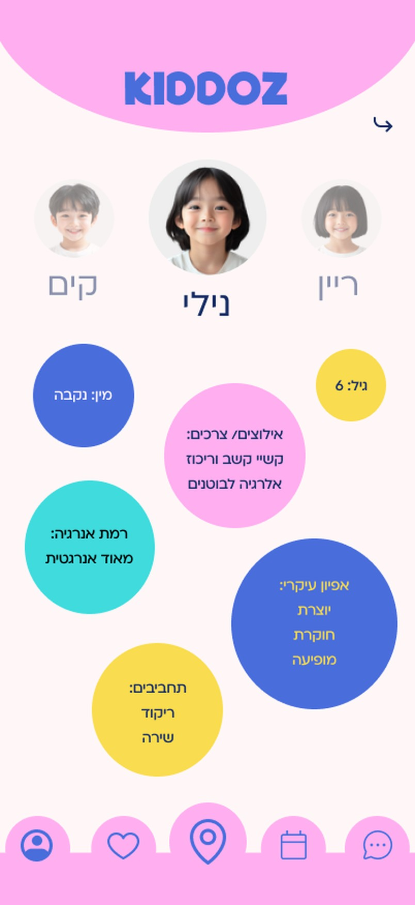
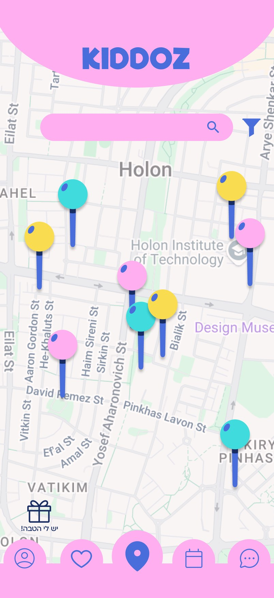
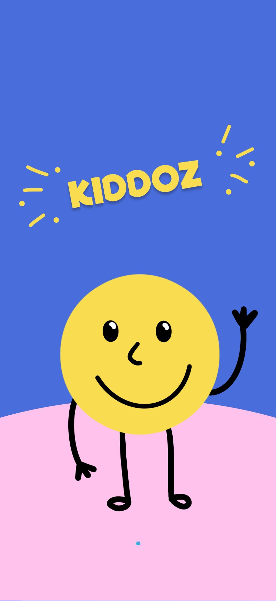
Every afternoon, the same question.
What do we do with the kids today? Parents want to get them away from screens and tire them out before bedtime. Finding something good, close and at the right time shouldn't take longer than the activity itself.
Find an activity that fits my child, near me and at a time I'm free, without opening ten tabs.
Be the one place parents open every week, with registration and activity benefits inside the app.
How we'd measure success
- Time from opening the app to choosing an activity
- Activities saved or booked per week
- Parents who come back within a week
- Bookings made through the app
- Benefits redeemed
- Activity providers listed
Kiddoz is a concept, so these are the KPIs we designed for, not results.
Following a parent through one afternoon.
We talked to people who look for activities, or get asked about them, and walked through the search step by step: what parents think, what they want and where it breaks.
I always find out afterwards that there was an activity we could have gone to.
I have no ideas what to do with them. It's all scattered on Facebook or on sites that aren't updated.
Parents ask me about activities all the time. I don't have one place to send them.
Plenty of listings, none of them personal.
| Ligdol | Tel Aviv | Herzliya | Kiddoz | |
|---|---|---|---|---|
| Filter by age | ✓ | ~ | ✓ | |
| Matched to the child, not only the age | ✓ | |||
| Benefits and deals | ✓ | ✓ | ✓ | |
| Community between families | ~ | ✓ | ✓ |
What we took from it
01Make it personal
02Make it visual and fast
03Make it easy to come back
04Answer the practical questions
From insight to decision
There's no shortage of activities.
There's plenty happening. It's just scattered, often outdated, and rarely matched to the child in front of you.
help parents find an activity that fits their child,nearby and right now,without hours of searching?
What makes Kiddoz different
01An AI chat that asks before it suggests
02Matched to the child, not only the age
03Kids who like the same things, together
The map in the middle.
Five tabs with the map in the center, because "what's near me?" is where most searches start. The chat has its own tab, one tap from anywhere.
Before paying, parents pick which of their kids are coming, and can apply a benefit on the same screen.
Jobs to be done
A chat that asks first.
Before drawing the chat screens, we mapped how a conversation narrows down a search. Parents can type freely, or tap through short questions that do the filtering for them.
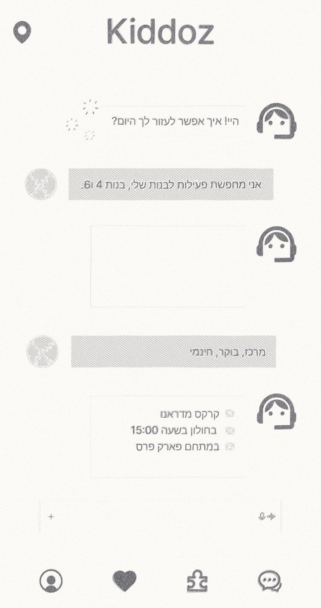
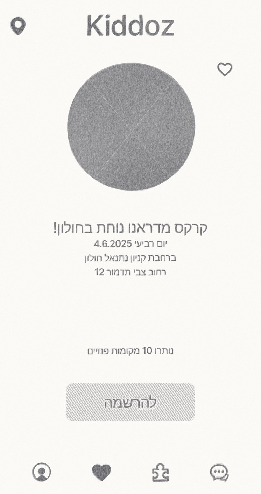
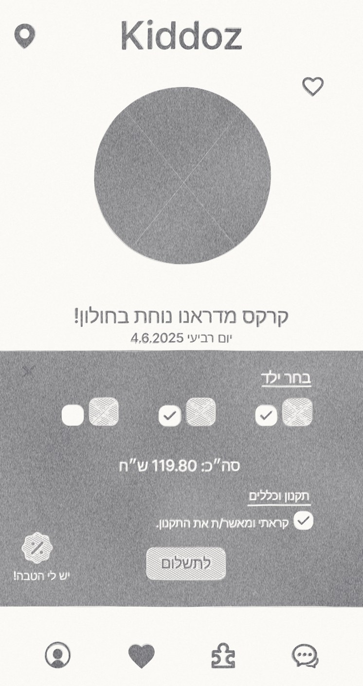
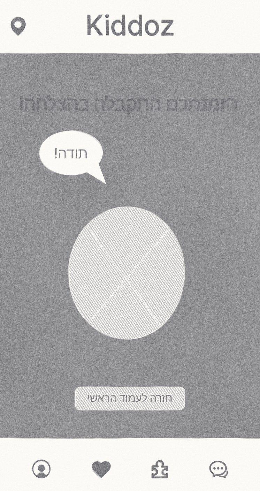
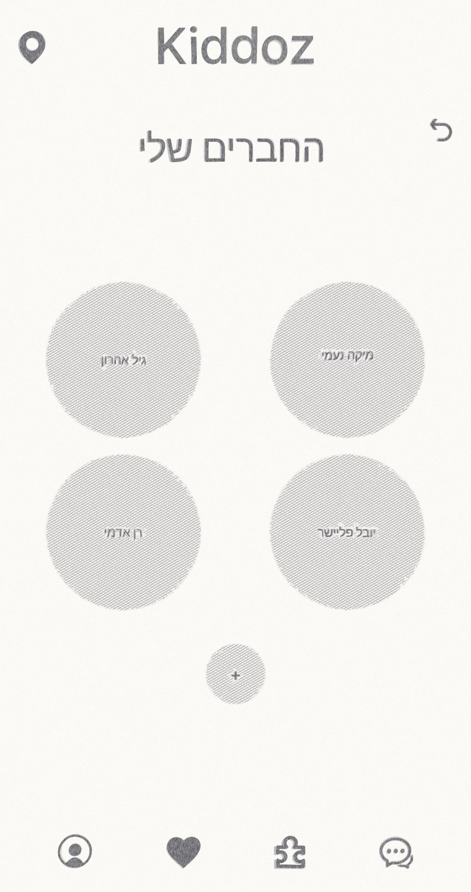
Wireframes for the chat and the booking flow: activity, choosing which kids are coming, paying with a benefit, and confirmation.
Playful for kids, clear for parents.
Bright colors and a friendly smiley for the mood, big round buttons and short labels for parents scrolling with one hand.
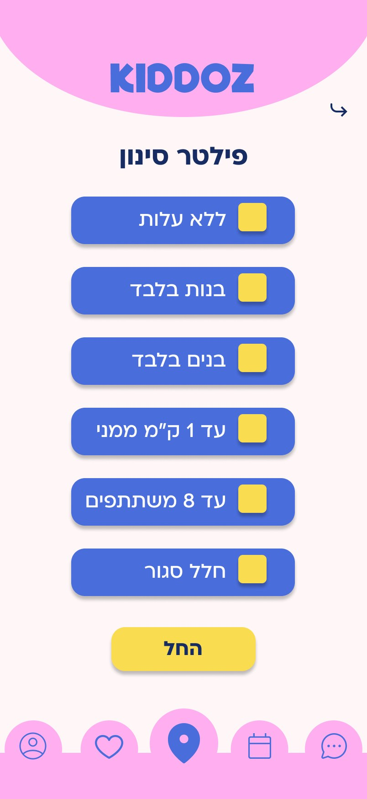
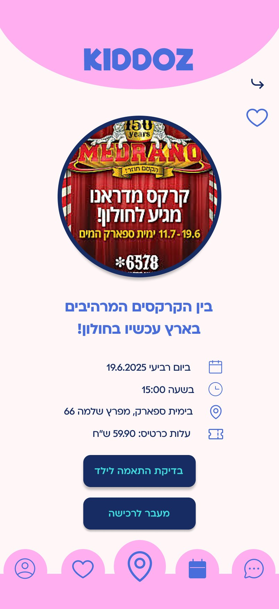
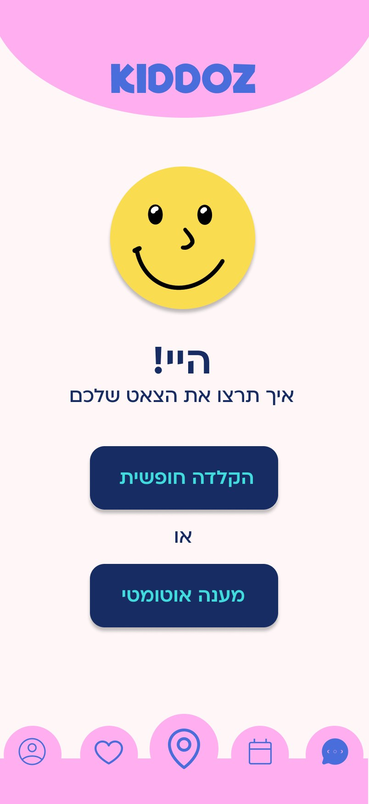
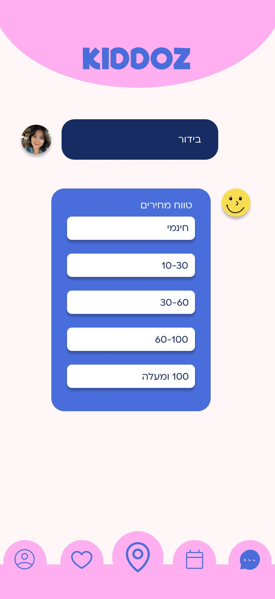
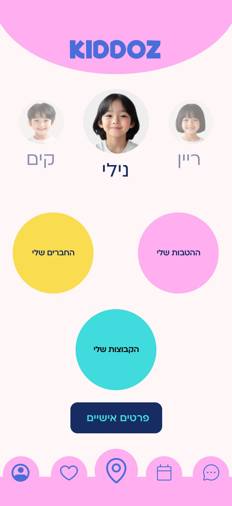
A smiley that waves hello.
A fixed palette carries through every screen, and a cheerful smiley character greets parents from the very first onboarding screen and comes back as the chat's face.
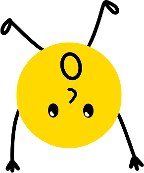
The Kiddoz smiley, in a few of its moods.
What we'd test next.
01Usability testing with parents
02Guided chat or free typing?
03Do parents trust the child profile?
04The provider side
What I'd do differently.
Parents told us they trust other parents. I'd bring that into the activity page itself: reviews, photos from families who went, and a simple way to share an activity with the WhatsApp group where so many searches start today.
Kiddoz started as "put all the activities in one place." The research pointed somewhere else: parents don't need more options, they need the right one, for this child, today. That shifted our focus from collecting to matching, and made the chat and the child profile the heart of the app.
So, what are we doing today?